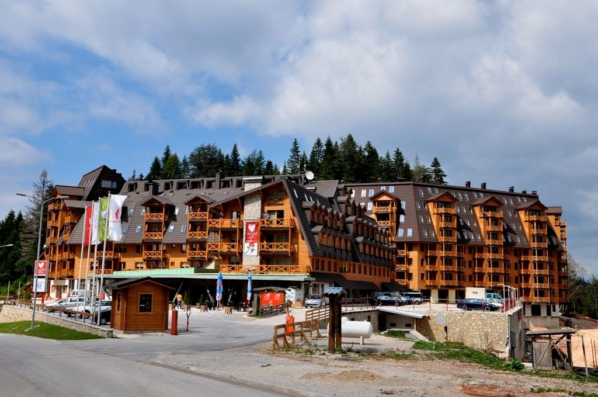

Jahorina, olimpijska kraljica zimskih sportova, sa najvećim vrhom Ogorjelica smještenim na 1916m iznad nivoa mora, nalazi se u nizu dinarskih planina koje se pružaju pravcem sjeverozpad-jugoistok i svojim vijencem čine granicu između Jadranskog mora i kontinentalnog zaleđa. Zbog takvog položaja na Jahorini se sukopljavaju tople mediteranske sa hladnim kontinentalnim vazdušnim masama što izuzetno pogoduje velikim količinama sniježnih padavina, te je stoga na Jahorini prosječan broj dana sa sniježnim pokrivačem preko 145, dok visina istog može narasti i do čak 5m.
Davne 1984. godine Jahorina je bila jedna od pozornica zimskih Olimpijskih igara koje su se tog februara održavale u Sarajevu. Na jahorinskim stazama takmičila su se tada najpoznatija skijaška imena, a Jahorina je te godine bila simbol prijateljstva i mira, planina koja je promovisala sve vjere, kulture i tradicije što i danas radi. Bogata historija koja se njeguje i promoviše, nadograđena najmodernijom skijaškom infrastruktutrom plasirala je ovu olimpijsku planinu na sami vrh skijaških destinacija šireg regiona, te velikog dijela Evrope.
Dvije potpuno nove šestosjedne žičare i dva nova ski lifta zaokružuju ponudu ovog ski centra na ukupno 24 ski staze dužine 47 km ski staza povezanih u jedinstvenu cjelinu sa 16 instalacija vertikalnog transporta ukupnog kapaciteta 28.800 skijaša na sat. Uz pomenutih 47 km idealno pripremljenih alpskih ski staza, po najvišim svjetskim standardima, Jahorina raspolaže i sa 10 km staza za nordijsko skijanje. Skijaši mogu izabrati skijanje na plavim stazama koje su ekvivalent za lake staze, crvenim stazama, koje predstavljaju staze srednje težine, kao i na crnim, odnosno, teškim stazama koje su prilagođene najiskusnijim i najspretnijim skijašima.
Kao što skijaši imaju preferencije po pitanju staza niz koje se spuštaju, oni imaju i preferencije kada je u pitanju vertikalni transport, no izbor je zaista veliki, pa tako on može da bude gondola, šestosjed, sidro, a za one manje spretne, skijaški tepisi.
Tokom ljetnjeg perioda, ova moćna planina dinarskog planinskog masiva ima veoma povoljnu klimu sa prelijepim proljećem i ljetom, tokom kojih je prekrivena je zelenom travom i raznovrsnim ljekovitim biljem. Takva klima pruža odlične uslove za pripreme raznih sportista, te za goste koji boluju od bolesti respiratornih organa, kao i za sve ostale koji žele da uživaju u svim netaknutim poklonima veličanstvene prirode i opojnom mirisu šume i njenih plodova.
Planina raspolaže zaista velikim brojem smještajnog kapaciteta, kako hotelskog, tako i privatnog, što omogućava da se brojka od skoro četvrtine miliona posjetitelja tokom svake sezone udobno smjesti i izabere onaj koji je baš po njegovom ukusu. Jahorina je ski centar poznat po dobroj zabavi, velikim koncertima najvećih muzičkih zvijezda regiona, muzičkim festivalima i predstavama. Fenomenalan provod i domaćinski pristup gostima, odlična gastro i wellness ponuda je karakteristična za ovu planinu, omogućava posjetiocima da se sa planine vrate puni utisaka i gotovo uvijek, očarani svim što Jahorina nudi, sa radošću i nestrpljenjem ponavljaju svoju posjetu.
 Ukoliko se odlučite za posjet planini Jahorina, koja je jedno od najpopularnijih zimskih odmorišta u okolini Sarajeva, preporučujemo da nezaobilazno posjetite hotel Termag i etno restoran Koliba, koji su na veoma skladan način uklopljeni u planinsko okruženje, te nude vrhunsku uslugu.